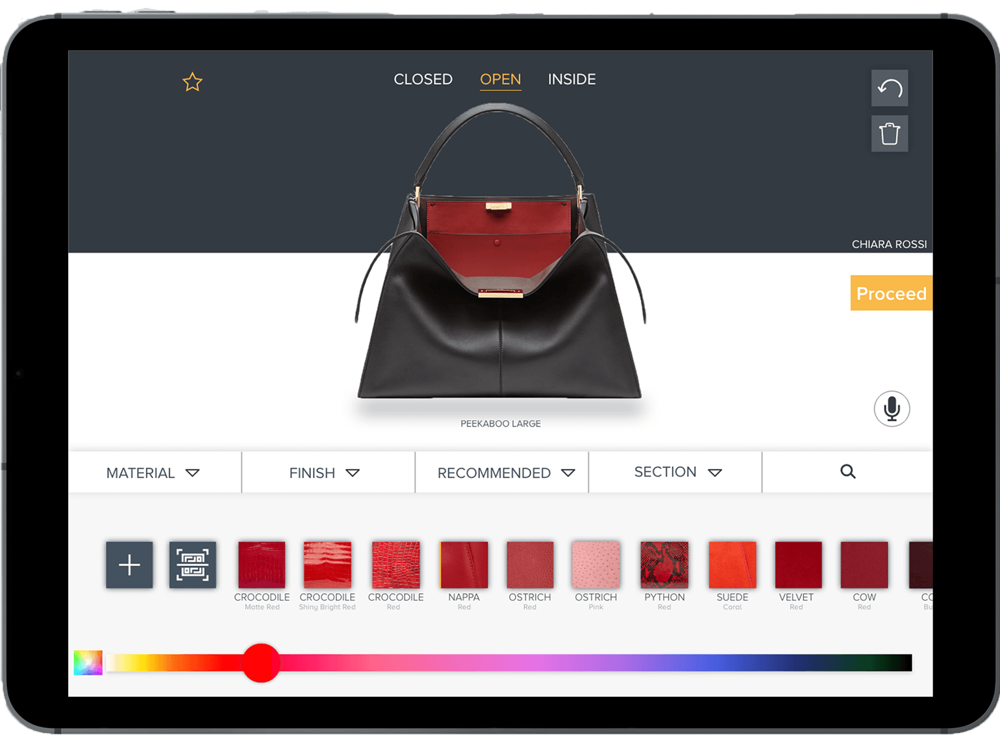
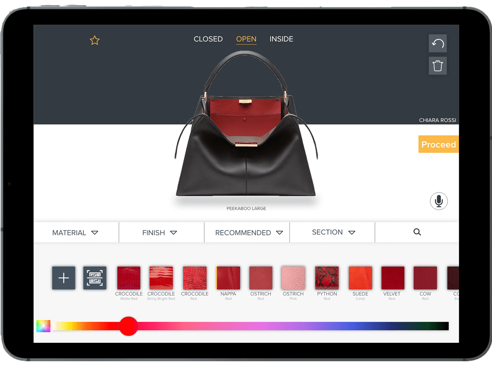

The Brief

This project was part of a class in UX, UI and product strategy in luxury at Scuola Politecnica di Design (Milan). The brief:
Analyse, define and develop a UX strategy that will show how FENDI could leverage digital media, design and communication to achieve brand goals and engage target users.
The Challenge
We found its design was outdated, and the interface was a bit complex, making it counter-intuitive and lacking fluidity.
The customization steps are presented in a form-like manner and the main information is in jargon.
There were no visual aids, which make this creative process resemble an administrative one.


 
